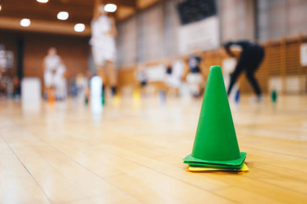
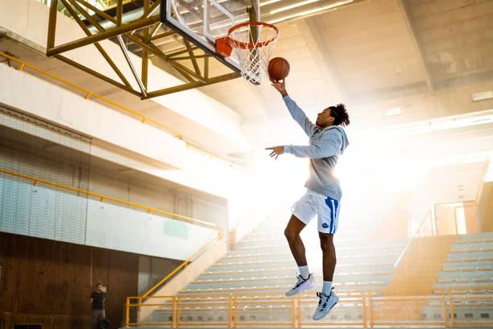

Basketball Training Drills
Whethere you are just starting or trying to adance your game, these drills will help you improve shooting, ball handling, footwork and overall basketball IQ. Each drill below includes a simple explanation of how to perform it and how it helps you improve.
🏀Form Drill Shooting

This drill helps build proper shooting mechanics. Stand close to the basket and shoot using only one hand, focusing on your follow through and arc. Aim for 25-50 makes before moving back.
- Improve shot consistency
- Helps build correct release and wrist action
- Great warm up for all skill levels
🏃Ball handling cone Drills
Set up 6-7 cones in a straight line. Dribble through using right hand, left hand, then alternate combinations. Keep your eyes up and dribble low.
- Improves Control
- Builds confidence while dribbling in traffic
- Great daily warm up drill
🎯Spot Shooting Challenge

Choose 5 shooting spots arounf the key. Shoot 5 shots from each spot and try to beat your score every day. Track progress in your progress form.
- Improves consistency from different court location
- Great for tracking shooting Improvement
- Builds confidence in game winning shots
⚡Fast Break Layup Drill
Start at half court and dribble full speed to the basket for the layup. Alternate right and left hand each time. Perform 20-30 reps.
- Improves speed and finishing
- Simulates real games fast break situations
- Builds conditioning and confidence at the rim